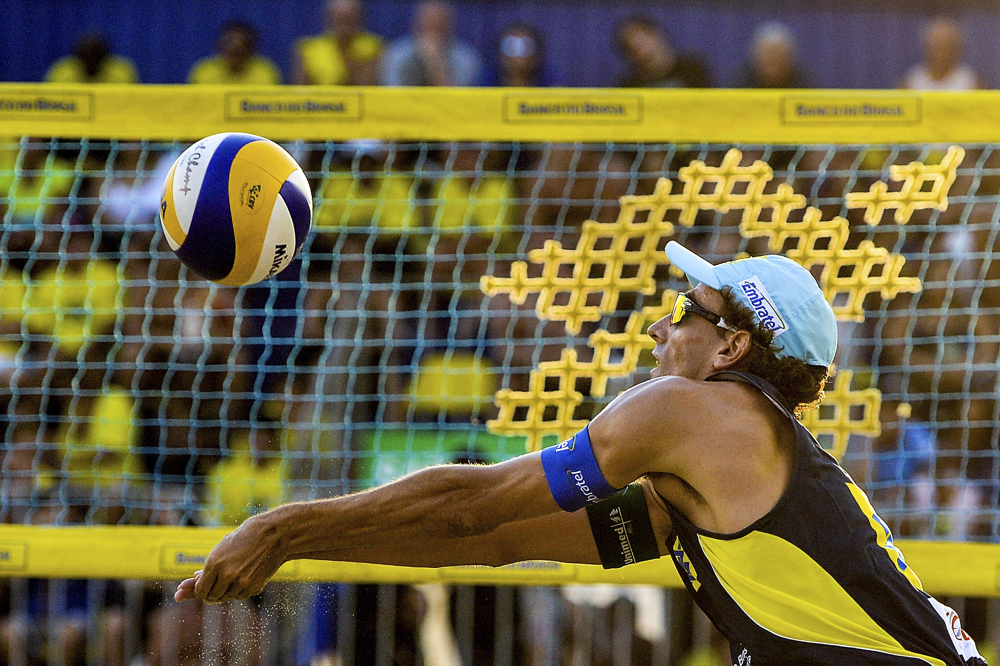

- As regras do vôlei.
- Cada set é terminado quando uma equipe alcança os 25 pontos, tendo 2 pontos de vantagem sobre a equipe adversária. Caso não tenha, o set prossegue até que uma equipe conquiste tal vantagem. Cada time é composto por 6 jogadores em quadra e 6 jogadores reserva. Após o saque, cada time só poderá tocar a bola três vezes, sendo proibido que um jogador toque a bola duas vezes seguidas. A equipe vencedora é aquela que ganhar o maior número de sets.
- Os cinco melhores jogadores masculino brasileiro de 2024?
- Em primeiro lugar o jogador Bruninho, levantador, ele possui 1,90 de altura .
- Em segundo lugar o jogador Thales, líbero, ele possui 1,90 de altura.
- Em terceiro lugar o jogador Leal, ponteiro, ele possui 2,01 de altura.
- Em quarto lugar o jogador Isac, central, ele possui 2,08 de altura .
- Em quinto lugar o jogador Alan, oposto, ele possui 2,02 de altura.
- As cinco melhores jogadoras feminina brasileira de 2024?
- Em primeiro lugar a jogadora Ana Carolina, ponteira, ele possui 1,83 de altura.
- Em segundo lugar a jogadora Carol, central, ela possui 1,83 de altura.
- Em terceiro lugar a jogadora Diana, central, ela possui 1,94 de altura.
- Em quarto lugar a jogadora Thaisa, central , ela possui 1,96 de altura.
- Em quinto lugar a jogadora Gabi, ponteira, ela possui 1,80 de altura.
Quais o objetivo do vôlei?
O objeto usado para a prática de vôlei é uma bola e o objetivo principal do jogo consiste na marcação de pontos ao mandar a bola para o campo adversário e fazer com que ela toque o chão. A instituição responsável pela organização de eventos e da regulação das regras é a FIVB, Fédération Internationale de Volleyball
